小厨房 · 本地导入24道菜
原文、图解与视频字幕整理。未调用云端导入或模型API。点击菜名查看食材、步骤与原图。
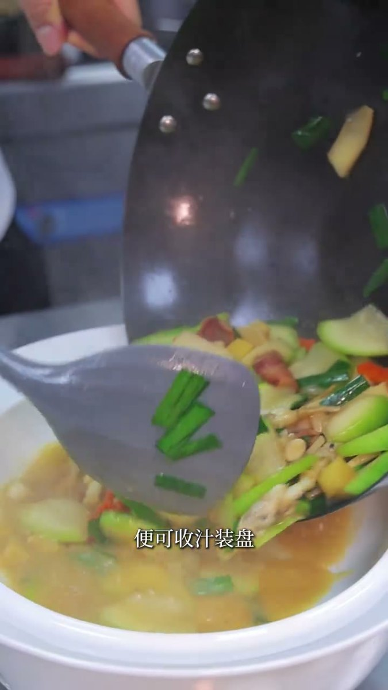
蒲瓜烧蛏子
蛏子 300 克、咸肉 30 克、蒲瓜 200 克、韭菜 15 克、姜 25 克、蒜 25 克、胡萝卜 20 克、春笋 20 克、糖 2 克、盐 1 克、生抽 5 克、花雕酒 适量、水 适量、食用油 适量
蛏子清洗净沙；蒲瓜切厚片，咸肉、姜、胡萝卜和春笋切片，韭菜切段。
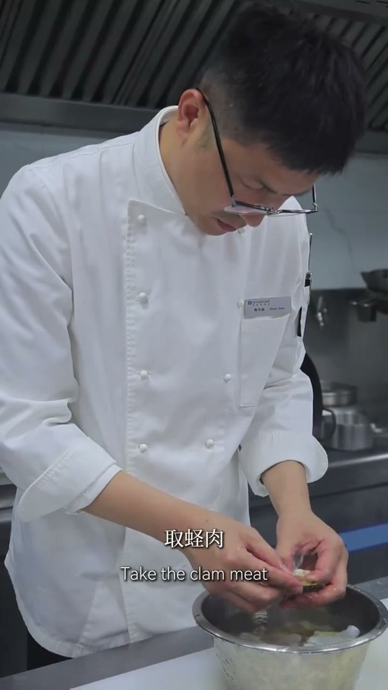
煮蛏取肉蛏子下锅煮至开壳，取出蛏肉备用。
约 00:12 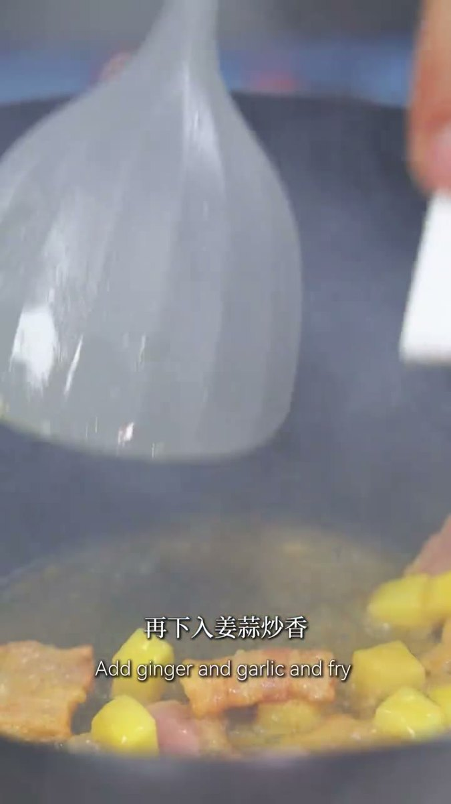
煸香咸肉姜蒜锅放少许油，下咸肉煸香，再下姜蒜炒香。
约 00:16 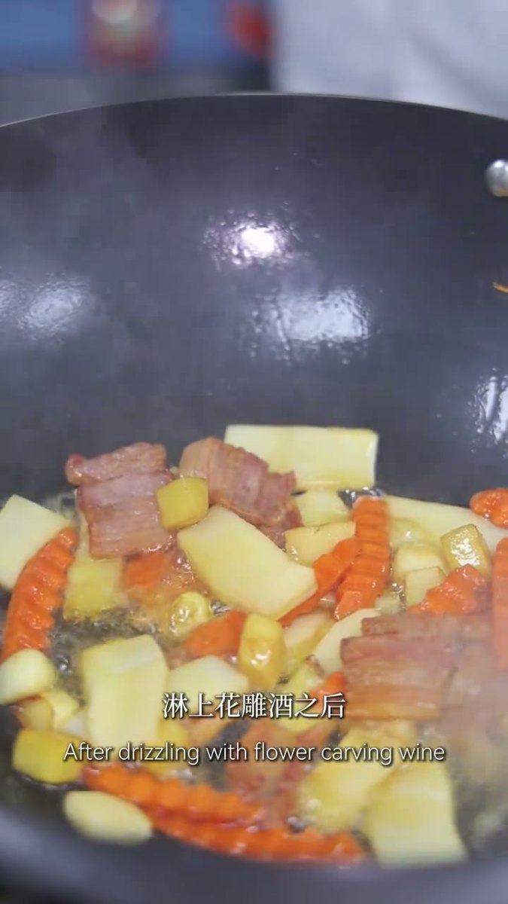
炒配菜加入胡萝卜和笋片翻炒，烹入花雕酒。
约 00:20 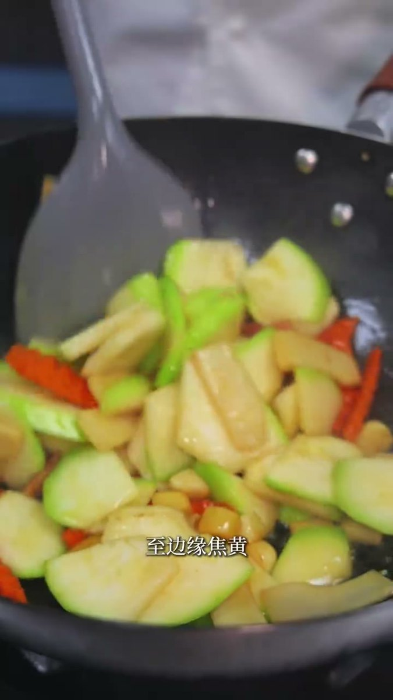
煎蒲瓜放蒲瓜厚片，炒至边缘微焦，加入少量水烧软。
约 00:24 加蛏调味放蛏肉，加糖2克、盐1克、生抽5克，稍收汁后加韭菜翻匀装盘。
约 00:30
依据本机保存的原笔记正文、图片及视频可见字幕整理，未调用云端导入或模型 API，未独立转写音频。 来源：EverettZhu《新荣记春季菜单🔥蒲瓜烧蛏子，在家轻松复刻！》。 原文未写明的食材用量保留适量；时间范围及未明确标出的备菜时间是整理估算，实际以食材熟度为准。 原片字幕写“萝卜”，画面为橙色胡萝卜；食材名按画面整理。水量原片未注明。
原笔记 · 下载菜谱 JSON 香煎芦笋
香煎芦笋
芦笋 350 克、酱油 适量、盐 适量、黑胡椒 适量、糖 适量（原文：少许）、香油 适量（原文：少许）、黄油或食用油 适量
芦笋洗净去老根，锅小可横切两段，用刀轻拍裂。
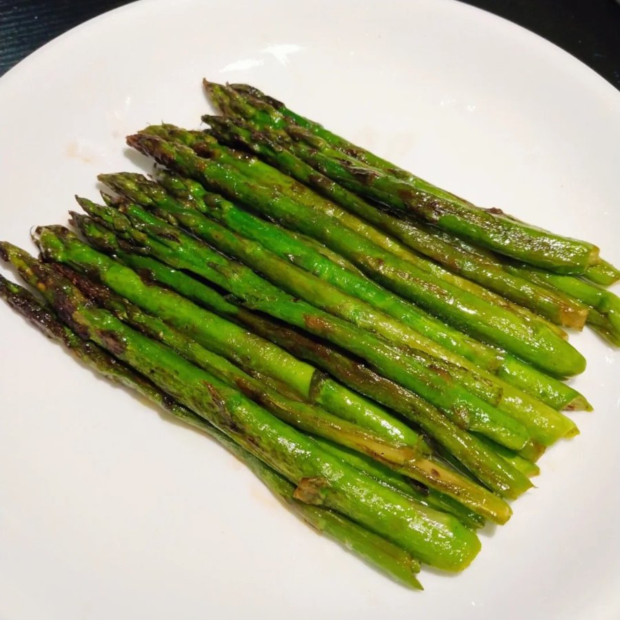
拌料腌制芦笋加少量盐、酱油、黑胡椒、少许糖和香油搓匀，腌至少30分钟。
原笔记图 1 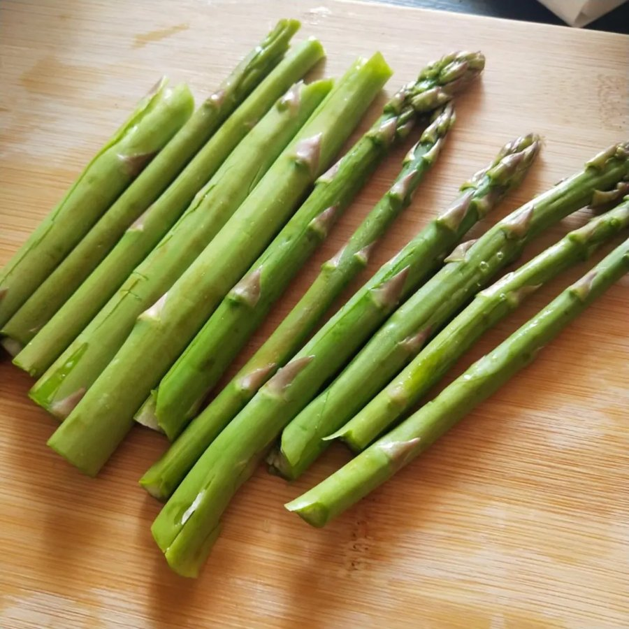
沥汁热锅倒掉腌出的汁水；锅烧热后放黄油或食用油。
原笔记图 2 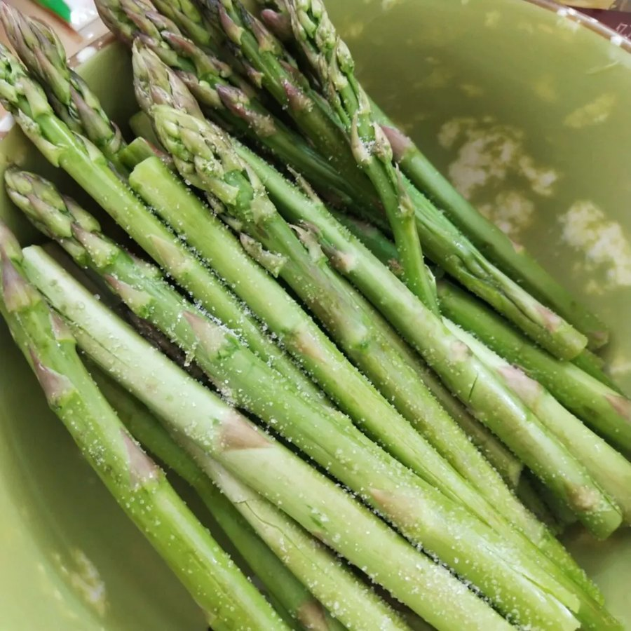
小火煎熟小火煎芦笋两面，约5分钟至熟透、表面微焦。
原笔记图 3
依据本机保存的原笔记正文、图片及视频可见字幕整理，未调用云端导入或模型 API，未独立转写音频。 来源：三水饱了《食谱菜谱♥香煎芦笋》。 原文未写明的食材用量保留适量；时间范围及未明确标出的备菜时间是整理估算，实际以食材熟度为准。 原文写350克芦笋用2小勺盐，同时强调盐勺很小、应少放；不把“2勺”当成标准量。配图为原笔记展示图。
原笔记 · 下载菜谱 JSON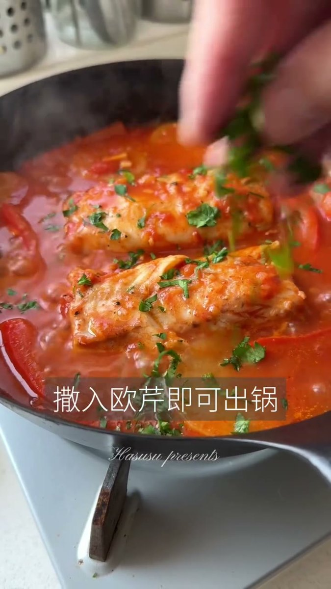
西班牙风味红烩鳕鱼
鳕鱼 适量、红葱头 适量（原文：2–3个）、蒜 2 瓣、甜椒 0.5 个、去皮番茄罐头 适量、甜椒粉 适量、白葡萄酒 70 毫升、土豆 适量、水或鱼高汤 适量、黑胡椒 适量、海盐 适量、欧芹 适量、橄榄油 适量
鳕鱼擦干，用海盐和黑胡椒腌制；红葱头、蒜切碎，甜椒切条，土豆切片。
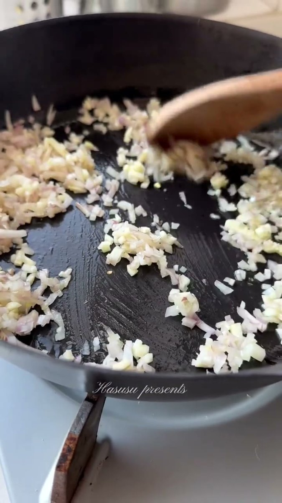
炒香葱蒜甜椒锅放橄榄油，炒香红葱头、蒜末与甜椒条。
约 00:28 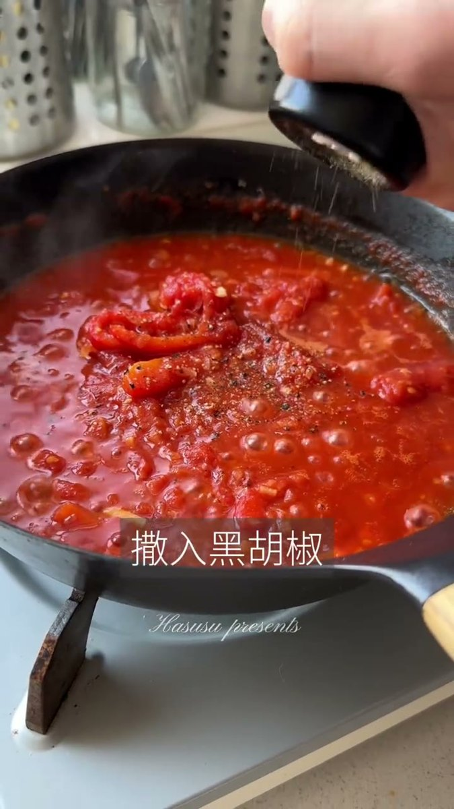
炒番茄底加入去皮番茄罐头、甜椒粉及70毫升白葡萄酒，煮开后撒黑胡椒。
约 00:44 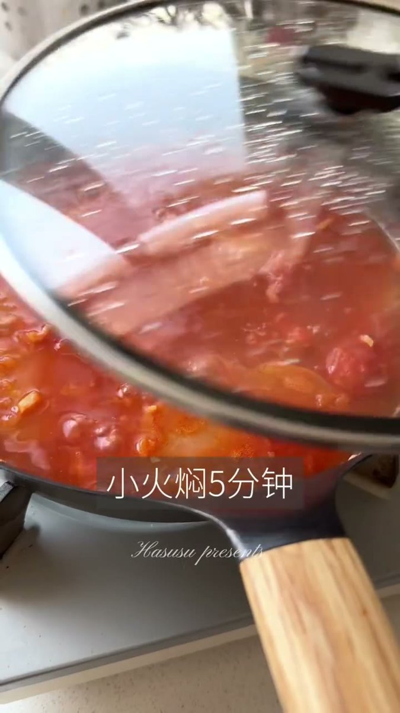
焖土豆下土豆片，倒水或鱼高汤，小火焖5分钟。
约 00:52 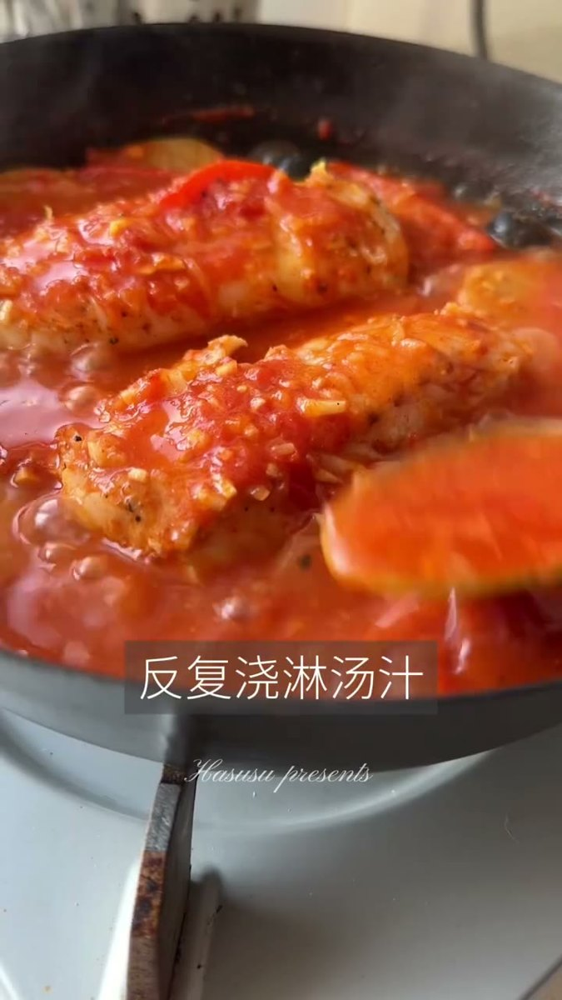
下鳕鱼浇汁放鳕鱼入汤，反复浇淋汤汁，继续加热至鳕鱼和土豆都熟透。
约 00:58 欧芹点缀撒欧芹后盛盘，保留红烩汤汁。
约 01:02
依据本机保存的原笔记正文、图片及视频可见字幕整理，未调用云端导入或模型 API，未独立转写音频。 来源：好叔叔Hasusu《西班牙风味红烩鳕鱼🔥简单家常！美味🥂》。 原文未写明的食材用量保留适量；时间范围及未明确标出的备菜时间是整理估算，实际以食材熟度为准。 鳕鱼重量、土豆数量、番茄与汤量原片未标明。
原笔记 · 下载菜谱 JSON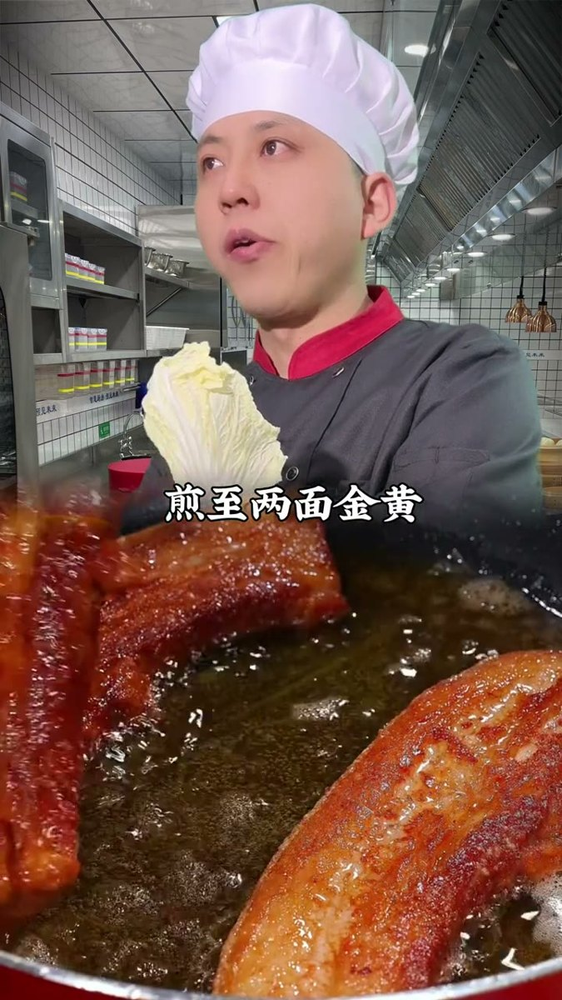
啤酒腌香煎五花肉
五花肉 适量（原文：原片未明确配方重量）、啤酒 适量、葱 适量、姜 适量、蚝油 1 勺、椒盐粉 原片半包，包装规格未注明、食用油 适量、生粉 1 勺
五花肉切厚片，葱姜切段片。
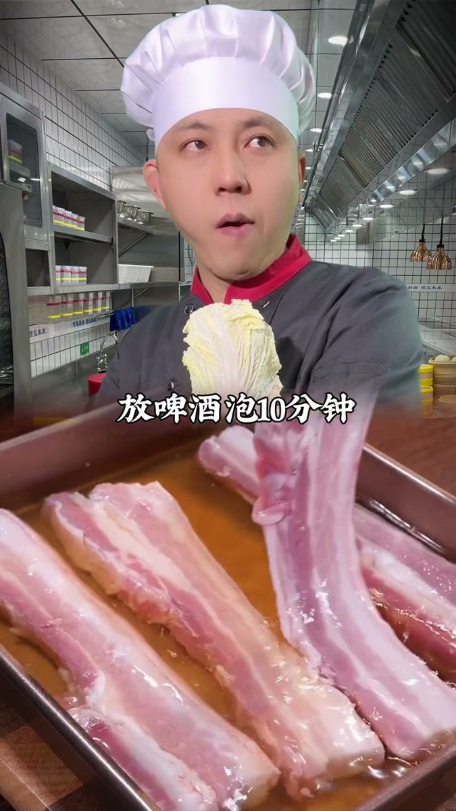
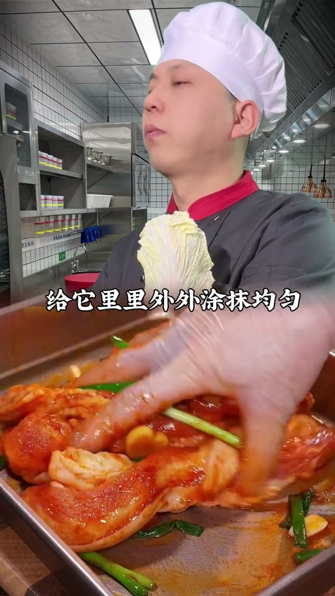
调味腌制加葱姜、蚝油1勺、半包椒盐粉和少许油，抓匀后腌10分钟；椒盐粉规格不明，实际宜少量调整。
约 00:12 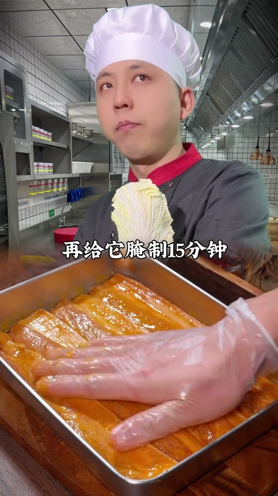
去料裹粉取出葱姜料渣，加1勺生粉抓匀，再腌15分钟。
约 00:18 小火煎熟锅中放油烧热，下肉片全程小火煎，翻面煎至两面金黄且内部熟透。
约 00:24
依据本机保存的原笔记正文、图片及视频可见字幕整理，未调用云端导入或模型 API，未独立转写音频。 来源：杨掌厨《啤酒腌香煎五花肉》。 原文未写明的食材用量保留适量；时间范围及未明确标出的备菜时间是整理估算，实际以食材熟度为准。 原笔记无标题，此标题由实际视频内容整理；“10块钱3斤”是口播价格描述，未当作配方重量。
原笔记 · 下载菜谱 JSON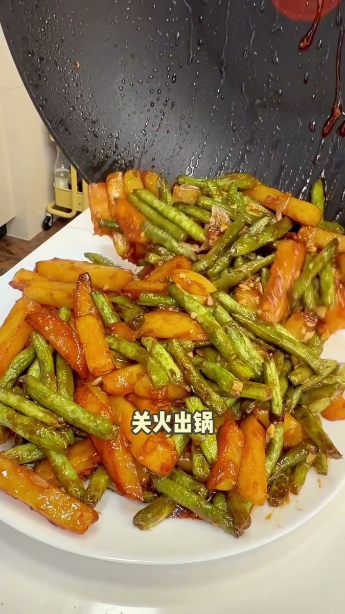
土豆烧豆角
扁豆 500 克、土豆 700 克、生抽 60 毫升、老抽 10 毫升、盐 2 克、糖 5 克、玉米淀粉 3 克、水 100 毫升、蒜 15 克、葱花 15 克、食用油 适量
扁豆掰段，土豆切成手指粗条；蒜切末，留一半出锅前用。
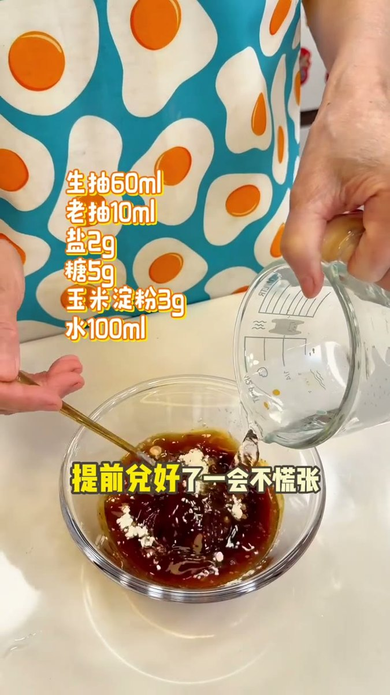
混合碗汁生抽60毫升、老抽10毫升、盐2克、糖5克、玉米淀粉3克和水100毫升混匀。
约 00:20 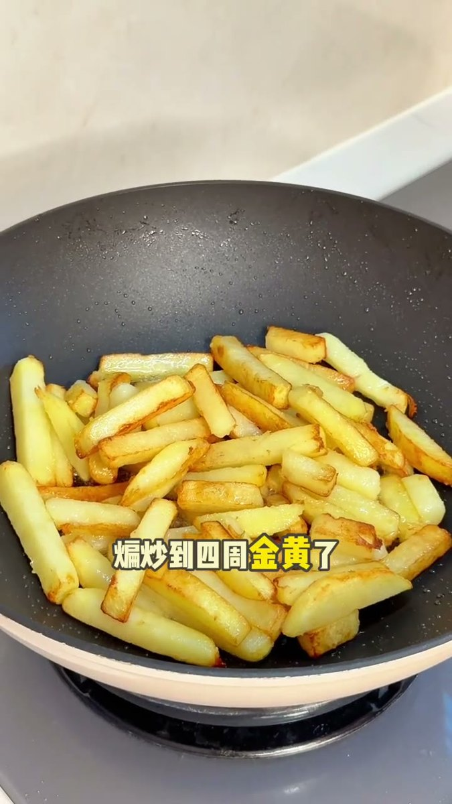
煎香土豆锅中放油，用中小火将土豆煎至四周金黄、熟透后盛出。
约 00:28 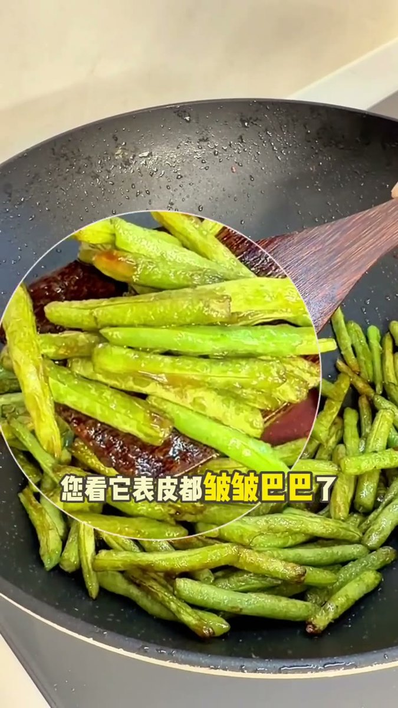
煸熟扁豆用锅中余油煸炒扁豆，炒至表皮起皱且彻底熟透。
约 00:36 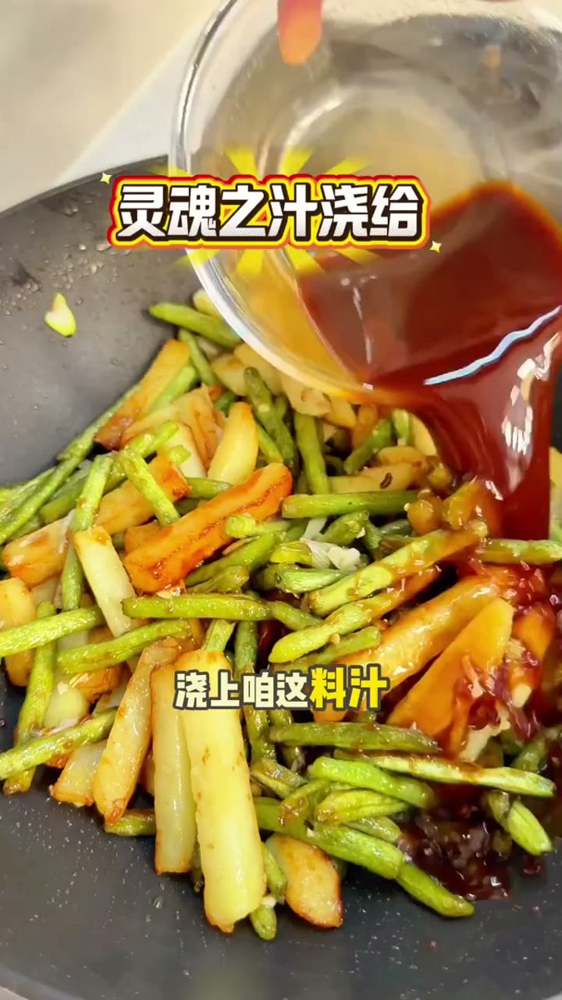
合炒入味加入葱花和一半蒜末炒香，倒回土豆及碗汁翻匀。
约 00:44 收汁加蒜收至汤汁浓稠，加入剩余蒜末翻匀，关火出锅。
约 00:52
依据本机保存的原笔记正文、图片及视频可见字幕整理，未调用云端导入或模型 API，未独立转写音频。 来源：孩儿他姥姥《给肉都不换‼️土豆烧豆角🤤巨香巨下饭》。 原文未写明的食材用量保留适量；时间范围及未明确标出的备菜时间是整理估算，实际以食材熟度为准。 豆角必须充分煮熟，不能仅凭表皮颜色判断。
原笔记 · 下载菜谱 JSON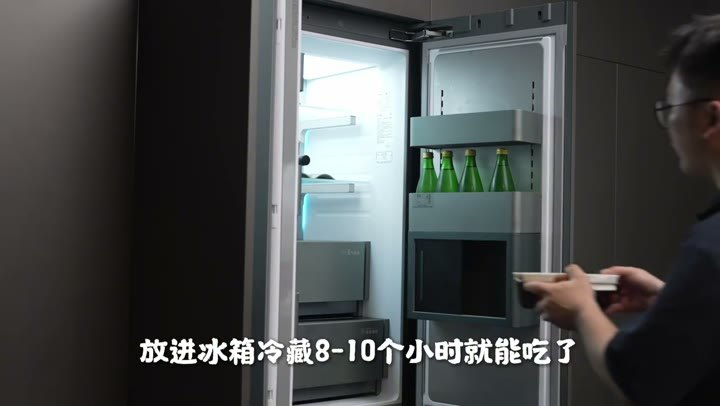
万能熟醉汁
桂皮 1 根、香叶 适量（原文：3–5片）、八角 适量（原文：2–3颗）、花椒 适量（原文：20–30粒）、陈皮 15 克、姜 4 厚片、葱结 适量（原文：1–2根）、干辣椒 适量（原文：3–4个）、话梅 适量、黄冰糖 150 克、薄盐生抽 500 毫升、花雕酒 500 毫升、白酒 100 毫升、柠檬 0.5 个、虾蟹或小海鲜 适量
香料清洗沥干，姜切厚片，柠檬去籽；海鲜清理干净。
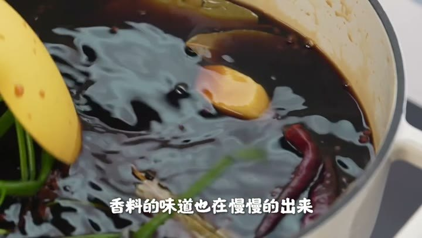
低火熬底汁桂皮、香叶、八角、花椒、陈皮、姜、葱结、干辣椒和话梅入锅，加150克冰糖和500毫升薄盐生抽，小火加热至冰糖融化、香料出味。
约 00:56 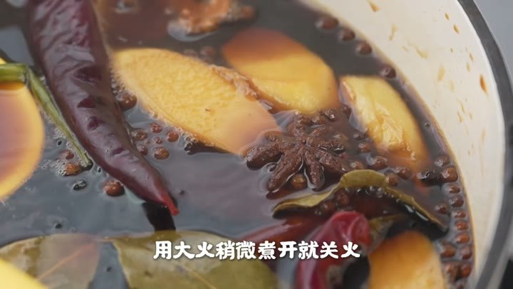
加酒煮开倒500毫升花雕酒和100毫升白酒，大火刚煮开即关火，不久煮。
约 01:04 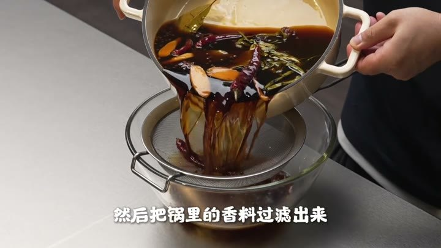
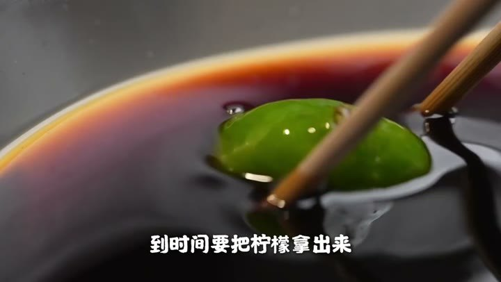
柠檬浸香半个去籽柠檬挤汁并放入醉汁，冷藏30分钟后取出柠檬，避免发苦。
约 01:18 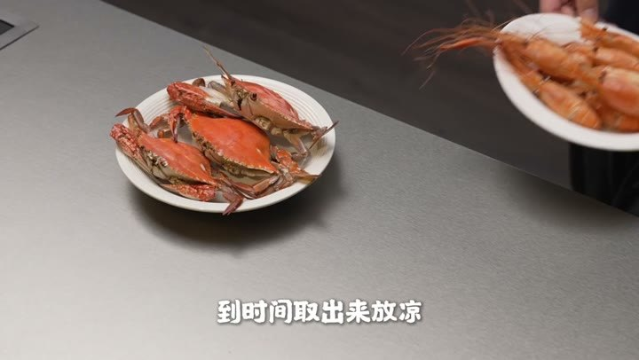
海鲜蒸熟海鲜冷水上锅蒸，原片中小火约15分钟；按种类和大小确保完全熟透，放凉后沥干。
约 02:12 冷藏入味熟海鲜放洁净容器中，加醉汁浸泡，冷藏8–10小时入味。
约 02:20
依据本机保存的原笔记正文、图片及视频可见字幕整理，未调用云端导入或模型 API，未独立转写音频。 来源：阿晨吃饱了《自制万能熟醉汁！目前吃到最好吃的做法！》。 原文未写明的食材用量保留适量；时间范围及未明确标出的备菜时间是整理估算，实际以食材熟度为准。 这是熟醉，不适用于生腌。话梅用量未注明；嗜甜可按原片把冰糖加至200克。原片广告内容未纳入菜谱。
原笔记 · 下载菜谱 JSON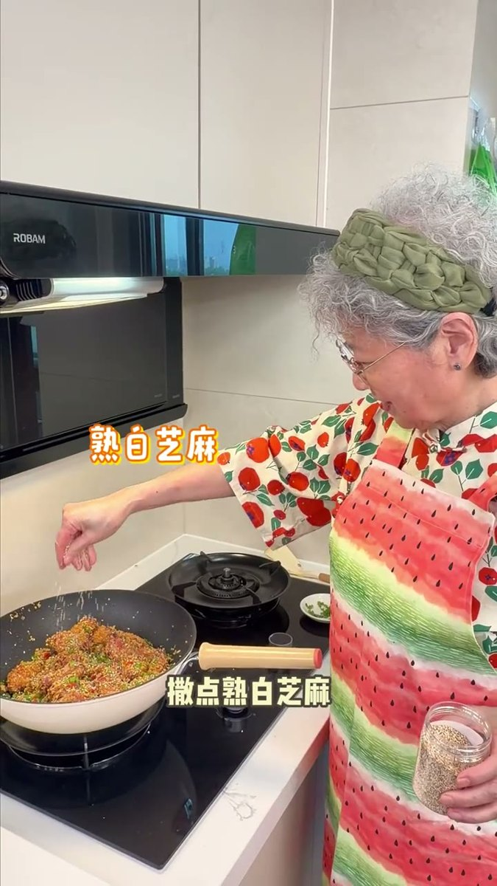
蒜香鸡翅
鸡翅 1300 克、料酒 40 毫升、蚝油 25 克、生抽 40 毫升、盐 5 克、白胡椒粉 1 克、玉米淀粉 30 克、蒜 300 克、红椒 30 克、青椒 30 克、洋葱 50 克、葱花 适量、熟白芝麻 适量、食用油 适量
鸡翅清理干净，沥干并扎孔。青红椒和洋葱切碎。蒜切末后冲洗两三遍，挤干水分。
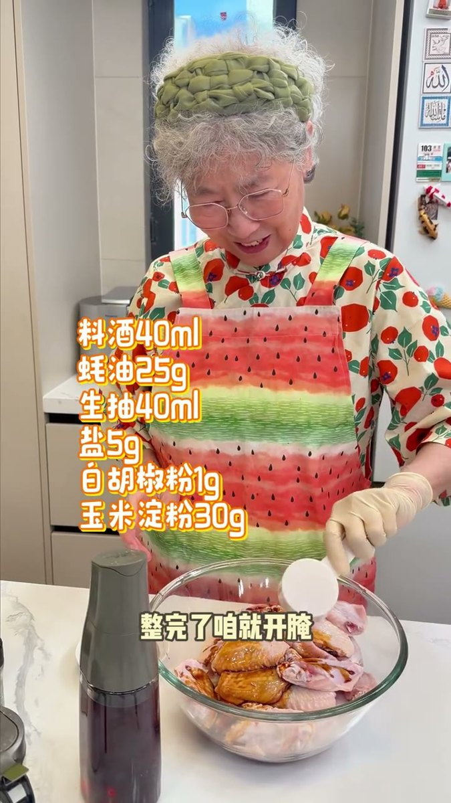
腌鸡翅鸡翅加入料酒、蚝油、生抽、盐、白胡椒粉和玉米淀粉拌匀腌制，原片未注明腌多久。
约 00:28 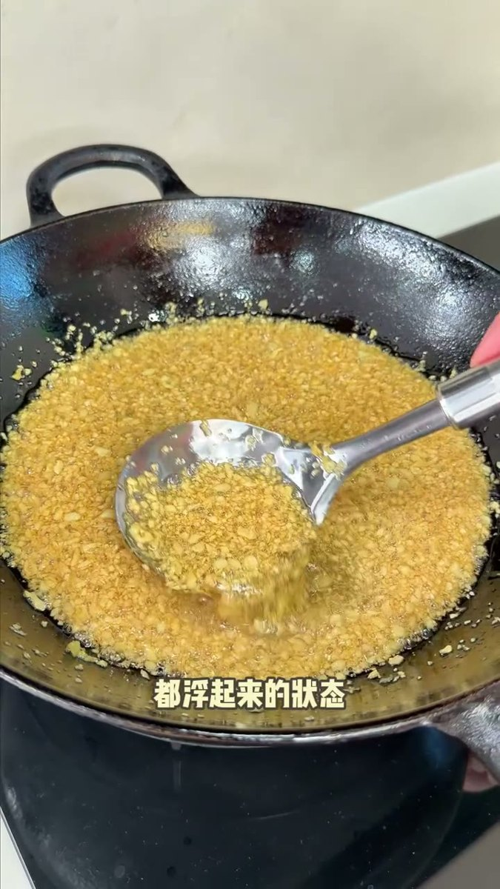
炸蒜酥蒜末下油锅，中小火慢炸至金黄浮起，捞出沥油放凉。
约 00:58 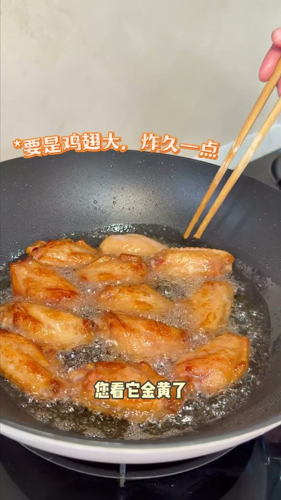
蒜油炸鸡翅用炸蒜的油炸鸡翅，控制火力，翻动至金黄且内部熟透；大鸡翅需延长时间。
约 01:12 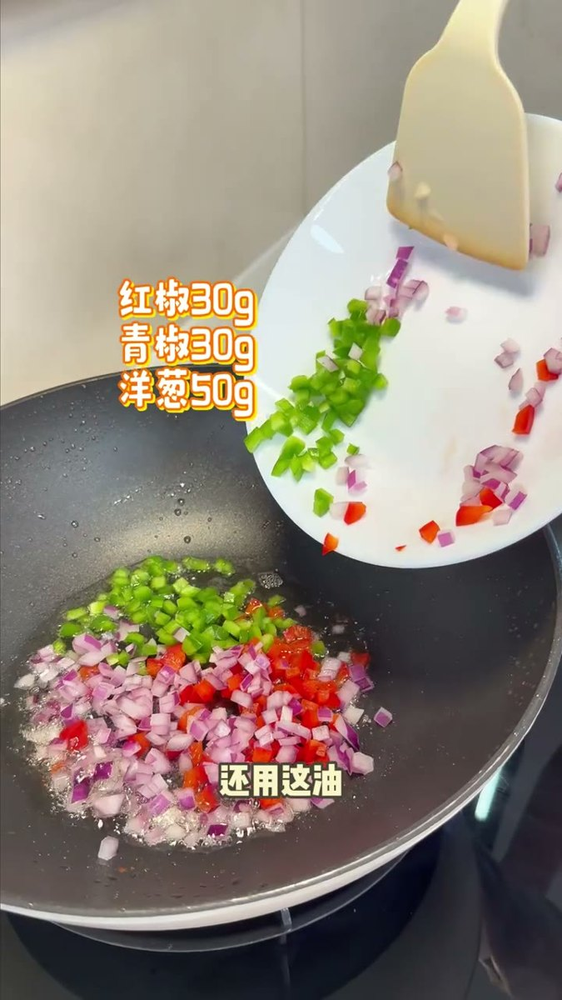
炒香配菜锅留少量蒜油，炒香青红椒和洋葱。
约 01:14 合炒出锅倒鸡翅翻匀，加入蒜酥、葱花和熟白芝麻，拌匀出锅。
约 01:22
依据本机保存的原笔记正文、图片及视频可见字幕整理，未调用云端导入或模型 API，未独立转写音频。 来源：孩儿他姥姥《比可乐鸡翅还夯‼️蒜香鸡翅😋外酥里嫩》。 原文未写明的食材用量保留适量；时间范围及未明确标出的备菜时间是整理估算，实际以食材熟度为准。 原片未给腌制和炸制精确时间，界面时间为估算。蒜末入油前充分沥干。
原笔记 · 下载菜谱 JSON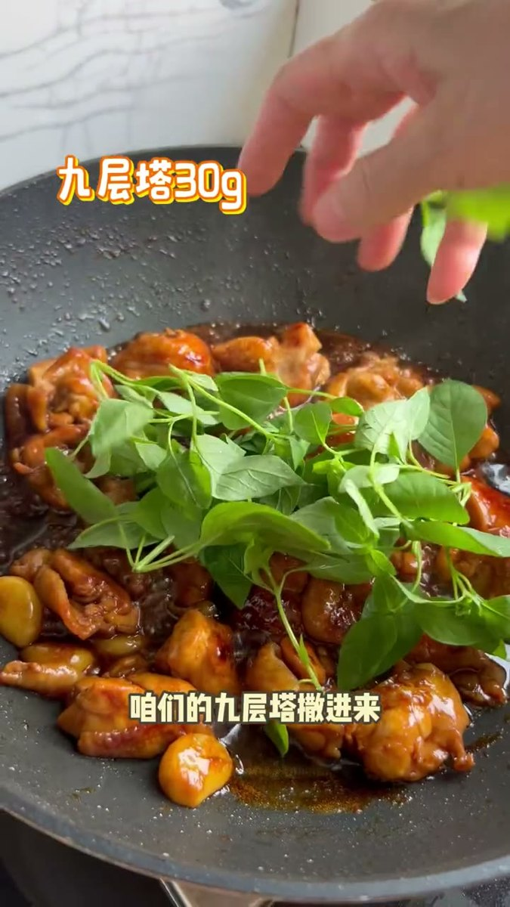
三杯鸡
鸡腿 1200 克、白胡椒粉 0.5 克、料酒 20 毫升、盐 2 克、香油 70 毫升、蒜 40 克、姜 15 克、米酒 70 毫升、生抽 70 毫升、冰糖 10 克、九层塔 30 克
鸡腿切块清理干净，控干水；姜切片，九层塔洗净沥水。
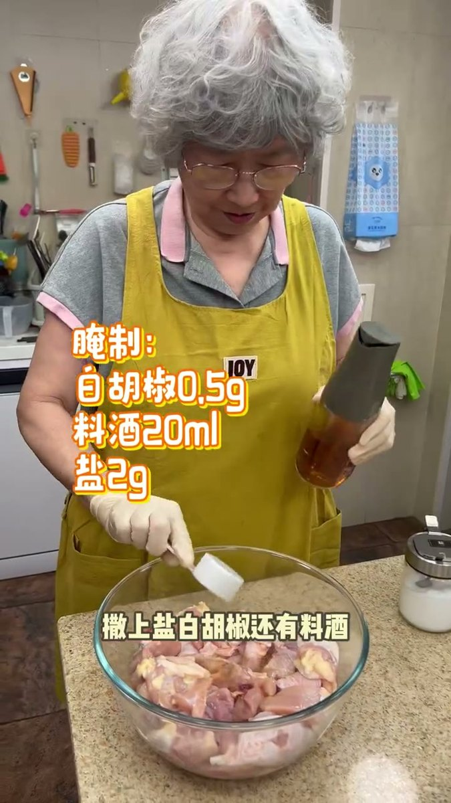
腌鸡腿鸡腿加白胡椒、料酒和盐，拌匀腌入味；原片未给腌制时长。
约 00:16 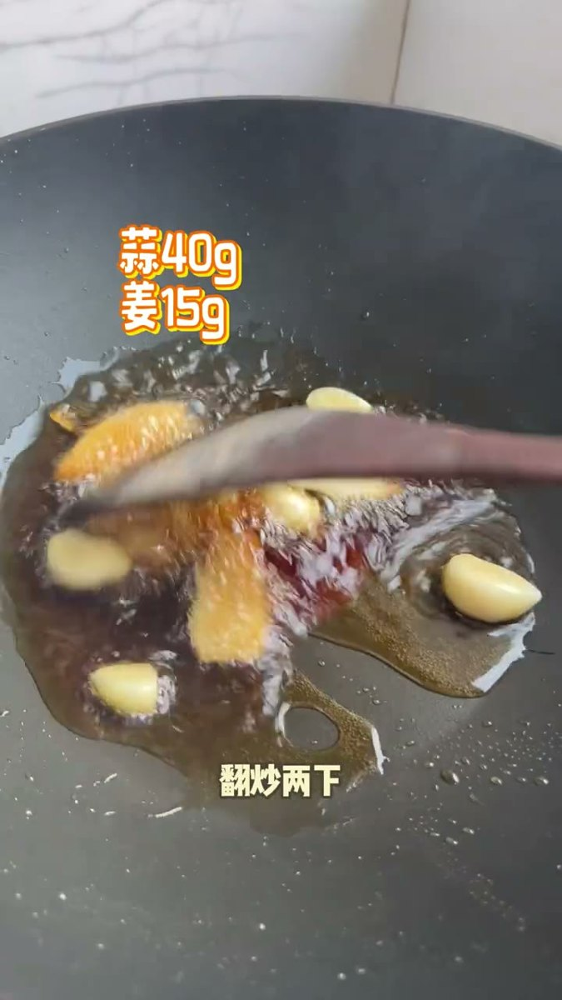
煸香姜蒜锅入70毫升香油，煸香姜片和蒜。
约 00:32 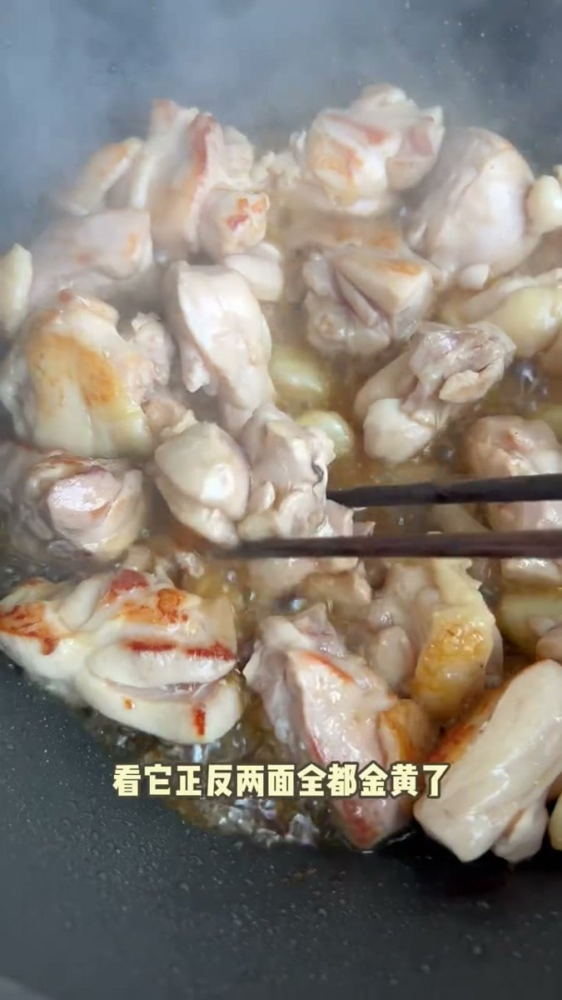
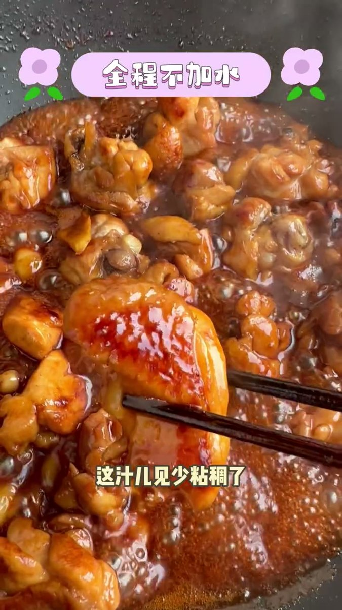
米酒生抽焖鸡倒70毫升米酒、70毫升生抽，加10克冰糖，全程不另加水，继续焖煮至鸡肉熟透、汁浓。
约 00:44 加入九层塔收至汤汁黏稠时撒九层塔，翻匀出锅。
约 00:46
依据本机保存的原笔记正文、图片及视频可见字幕整理，未调用云端导入或模型 API，未独立转写音频。 来源：孩儿他姥姥《香迷糊了❗️三杯鸡真的巨下饭🔥超好吃》。 原文未写明的食材用量保留适量；时间范围及未明确标出的备菜时间是整理估算，实际以食材熟度为准。 香油可按原片用胡麻油，米酒可用醪糟汤代替；九层塔可用香芹或香菜，风味不同。
原笔记 · 下载菜谱 JSON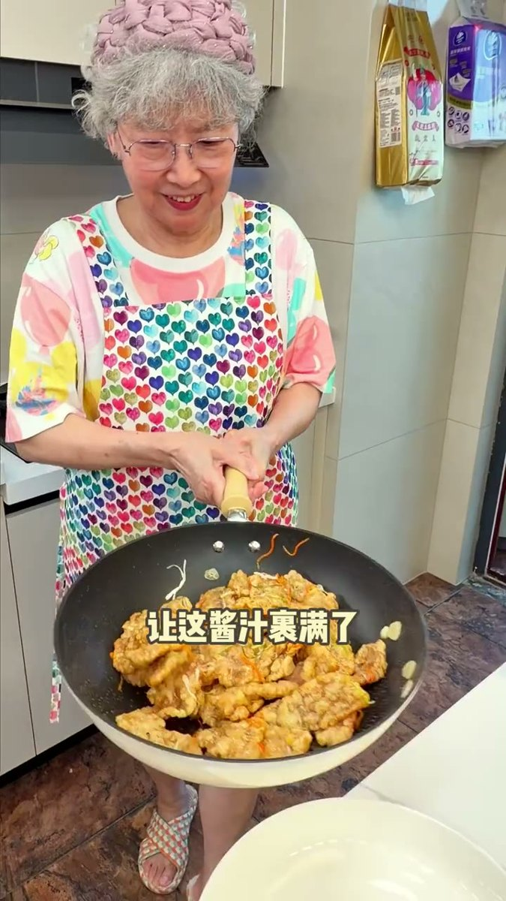
老式锅包肉
猪里脊 500 克、土豆淀粉 300 克、水 适量（原文：浸没淀粉）、油（挂糊） 50 毫升、白醋 100 毫升、生抽 5 毫升、盐 5 克、白糖 100 克、淀粉水 适量、姜 适量、蒜 适量、葱 适量、胡萝卜 适量、香菜 适量、食用油（炸制） 适量
里脊可先冷冻30–50分钟方便切片，再切约0.5厘米厚、轻拍松，冲洗后挤干水。土豆淀粉提前浸泡至少30分钟，倒掉表面清水。葱姜胡萝卜切丝，蒜切片。
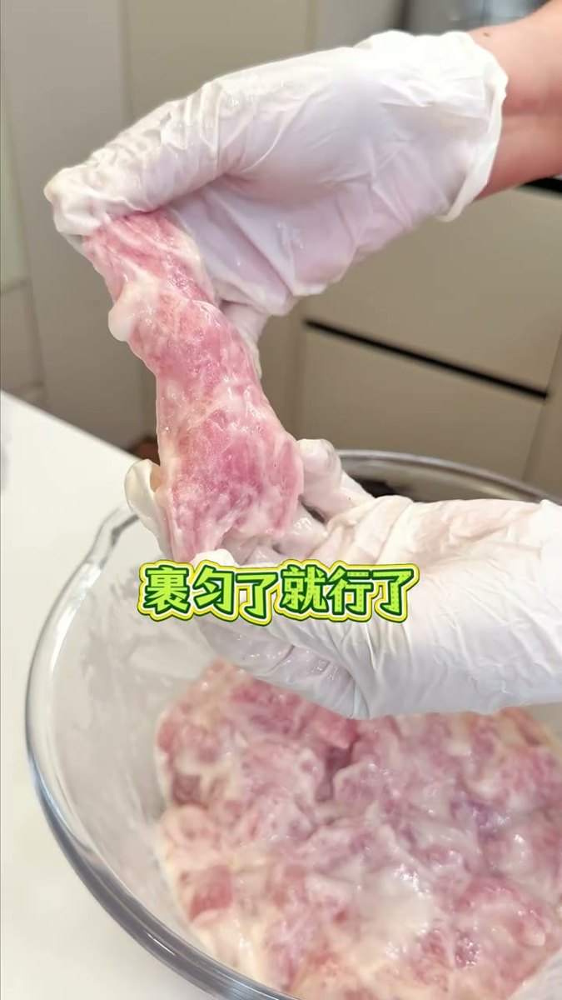
挂湿淀粉糊肉片裹上沉淀后的湿淀粉糊，调至能牢固挂住，最后加50毫升油拌匀。
约 00:34 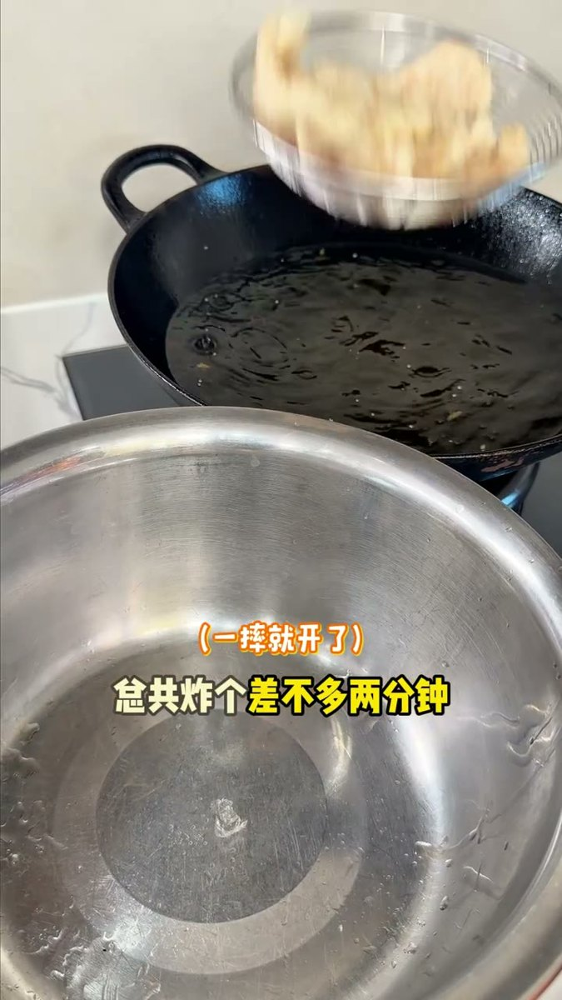
第一遍炸定型油热后转中火，肉片逐片入锅，先不翻动，定型后分开；原片第一遍约2分钟。
约 00:48 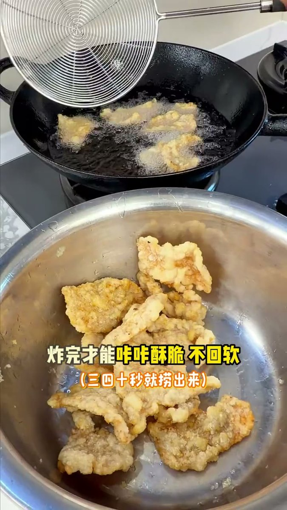
升温复炸升高油温，复炸约30–40秒至酥脆，捞出沥油。
约 00:54 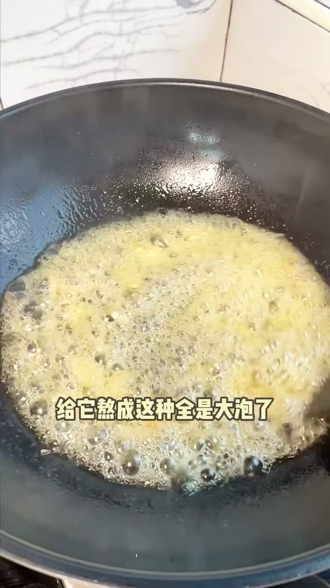
熬酸甜汁白醋、生抽、盐、白糖及少许淀粉水混匀。锅留底油，姜蒜爆香，倒汁熬至起大泡。
约 01:04 关火裹汁关火等约30秒，倒入肉片和葱丝、胡萝卜丝、香菜，迅速翻匀裹汁即出锅。
约 01:14
依据本机保存的原笔记正文、图片及视频可见字幕整理，未调用云端导入或模型 API，未独立转写音频。 来源：孩儿他姥姥《饭店级超正宗‼️老式锅包肉😋酥脆不回软》。 原文未写明的食材用量保留适量；时间范围及未明确标出的备菜时间是整理估算，实际以食材熟度为准。 糖醋比例保留原片；煎炸实际时间按肉片厚度调整并确保熟透。
原笔记 · 下载菜谱 JSON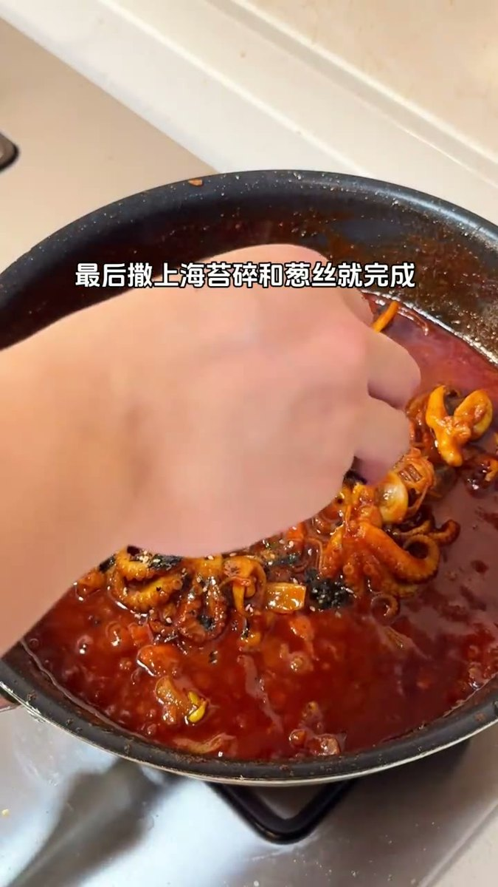
韩式辣炒五花肉八爪鱼
五花肉 适量、八爪鱼 适量、豆芽 适量、洋葱 适量、葱 适量、蒜末（炝锅） 适量、韩式辣酱 2 勺、辣椒面 2 勺、蚝油 1 勺、生抽 2 勺、白糖 2 大勺、料酒 1 勺、蒜末（料汁） 2 勺、香油 1 勺、黑胡椒粉 适量、盐 适量、味精 适量、水 适量、海苔碎 适量、食用油 适量
五花肉切片，八爪鱼处理干净，洋葱切丝，葱切花及丝。
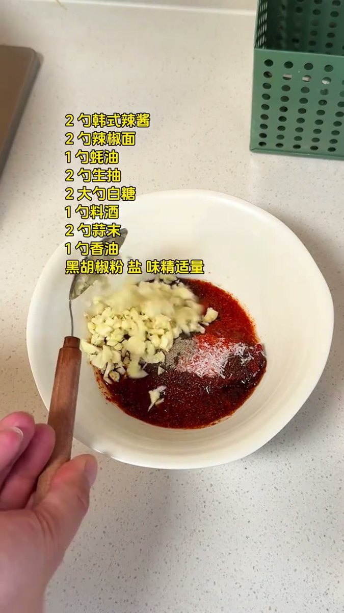
调韩式酱汁将辣酱、辣椒面、蚝油、生抽、糖、料酒、蒜末、香油及黑胡椒、盐、味精混匀，加少量水调开。
约 00:12 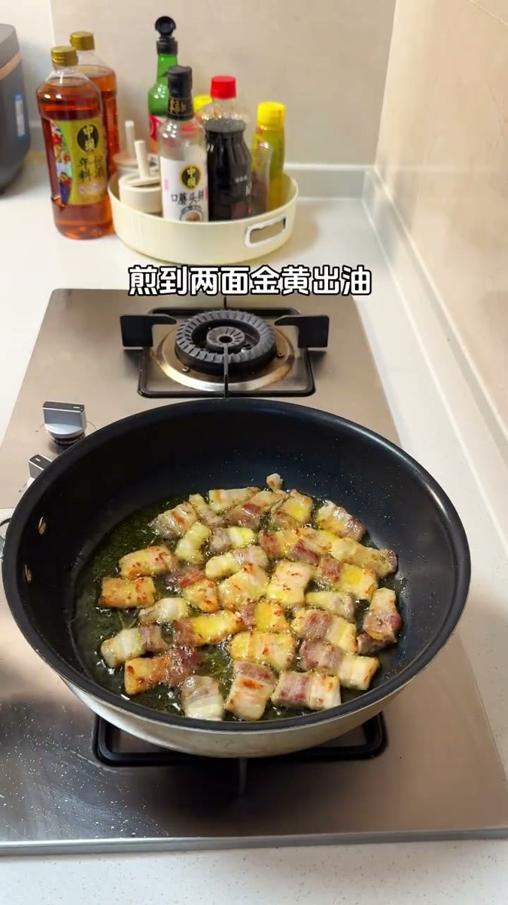
煎五花肉油热下五花肉，煎至两面金黄出油。
约 00:18 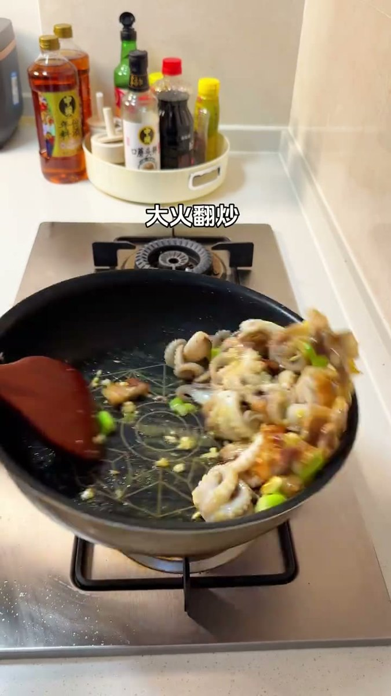
加八爪鱼加葱花和蒜末炒香，再放八爪鱼大火翻炒。
约 00:24 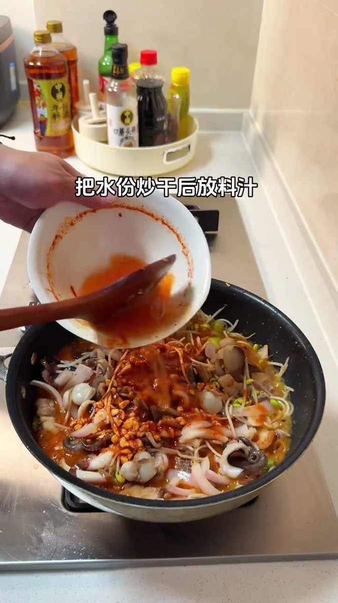
加菜炒干水分加入豆芽、洋葱翻炒，将多余水分炒干。
约 00:30 裹酱收汁倒酱汁大火收浓，确保五花肉和八爪鱼熟透，撒海苔碎与葱丝出锅。
约 00:36
依据本机保存的原笔记正文、图片及视频可见字幕整理，未调用云端导入或模型 API，未独立转写音频。 来源：辣椒泡咖啡《韩式辣炒五花肉八爪鱼❗️裹满酱汁绝了😭》。 原文未写明的食材用量保留适量；时间范围及未明确标出的备菜时间是整理估算，实际以食材熟度为准。 主料重量与用水量原片未注明。
原笔记 · 下载菜谱 JSON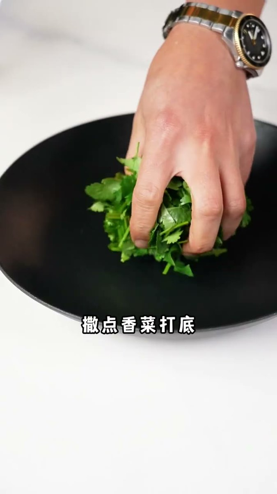
小炒黄牛肉
牛霖肉 300 克、鸡蛋 0.5 个、鸡粉（腌肉） 1 勺、生抽（腌肉） 1 勺、蚝油（腌肉） 0.5 勺、老抽（腌肉） 适量（原文：小半勺）、料酒（腌肉） 2 勺、白胡椒 适量、生粉 1 勺、油（腌肉） 1 勺、香菜 适量、美人椒 适量、干葱 适量、野山椒 适量、小米辣 适量、姜 适量、蒜 适量、泡椒水 2 勺、鸡精（碗汁） 1 勺、蚝油（碗汁） 1 勺、生抽（碗汁） 1.5 勺、老抽（碗汁） 适量（原文：小半勺）、料酒（碗汁） 2 勺、菜籽油 适量
牛肉逆纹切硬币厚薄片，抓松。配菜全部切好，香菜梗叶分开。
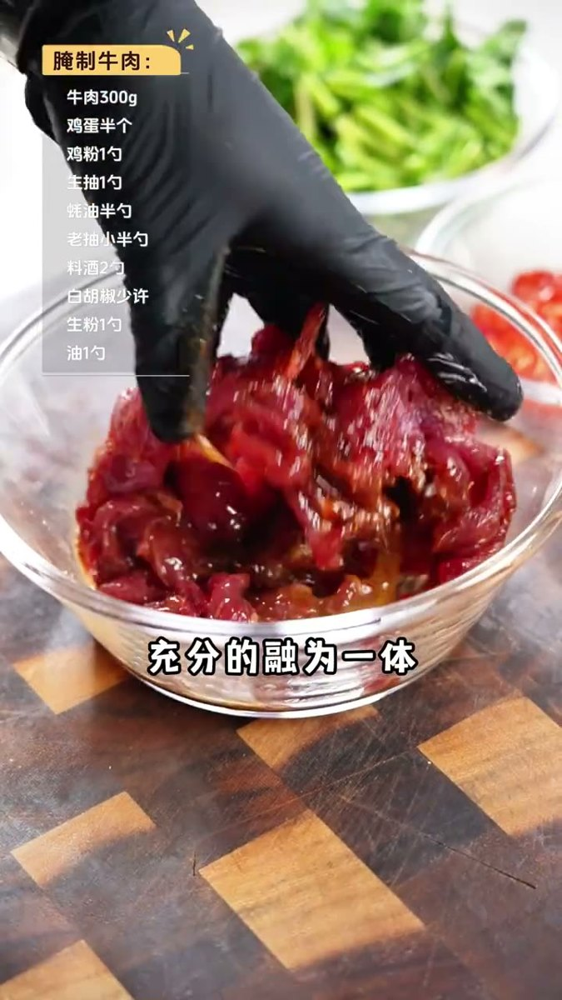
抓浆牛肉牛肉加半个鸡蛋及腌肉用鸡粉、生抽、蚝油、老抽、料酒、白胡椒，抓匀至有黏性，加生粉和油封住。
约 01:00 兑碗汁泡椒水、鸡精、白胡椒、蚝油、生抽、老抽和料酒按碗汁份量混匀。
约 01:18 热锅炒牛肉锅烧热后加菜籽油，下牛肉快速炒散，炒至变色，避免低温把牛肉炒出水。
约 01:44 加料快炒下姜蒜干葱，再下小米辣、野山椒与美人椒，快速翻炒。
约 01:52 碗汁香菜收尾淋碗汁，放香菜梗炒匀，确保牛肉熟透后装到香菜叶上。
约 02:04
依据本机保存的原笔记正文、图片及视频可见字幕整理，未调用云端导入或模型 API，未独立转写音频。 来源：林述巍-林大厨《小炒黄牛肉又老又柴？！今天手把手教你搞定》。 原文未写明的食材用量保留适量；时间范围及未明确标出的备菜时间是整理估算，实际以食材熟度为准。 视频配料板写香菜300克、美人椒300克、干葱300克、野山椒100克、小米辣200克、姜蒜200克，并注明按口味调整；这些与300克牛肉比例异常，因此主清单保留适量，原数值在此留存待核对。
原笔记 · 下载菜谱 JSON少油地三鲜
茄子 500 克、土豆 300 克、青椒 150 克、蚝油 15 克、老抽 10 毫升、生抽 30 毫升、水 80 毫升、盐 3 克、糖 5 克、葱 10 克、蒜 7 克、淀粉 适量、食用油 适量、盐（泡茄子） 适量
茄子去皮切滚刀块后泡盐水；土豆、青椒也切块。葱蒜切碎，留部分蒜末最后用。
调碗汁蚝油、老抽、生抽、水、盐和糖按配方混匀备用。
约 00:18 处理茄子土豆茄子沥去水分后抓上少许淀粉；土豆焯至约八成熟后捞出沥水。
约 00:28 少油煎炒锅中少量油煎炒土豆、青椒和茄子，至土豆熟透、茄子变软后盛出。
约 00:38 合炒收汁用葱蒜炝锅，倒碗汁烧起大泡，再倒回蔬菜翻匀，收至汁浓。
约 00:48
依据本机保存的原笔记正文、图片及视频可见字幕整理，未调用云端导入或模型 API，未独立转写音频。 来源：孩儿他姥姥《下饭神器‼️地三鲜😋简单少油做法地三鲜》。 原文未写明的食材用量保留适量；时间范围及未明确标出的备菜时间是整理估算，实际以食材熟度为准。
原笔记 · 下载菜谱 JSON柠檬黄油香煎三文鱼
三文鱼 2 块、橄榄油 30 毫升、黄油 40 克、柠檬汁 20 毫升、蒜 1 瓣、干葱头 20 克、欧芹 2 克、干白葡萄酒 100 毫升、盐 适量、黑胡椒 适量
三文鱼两面撒盐与胡椒，蒜切末、干葱切细丁，欧芹切碎。
中小火煎鱼不粘锅淋橄榄油，保持中小火，每一面都煎至上色且鱼肉熟透，取出。
约 01:06 炒香葱蒜倒去多余油脂，不洗锅，放干葱和蒜末炒软。
约 01:26 酒与柠檬收汁烹入100毫升干白刮起锅底香味，再加20毫升柠檬汁，稍收浓。
约 01:36 低温乳化黄油转微火或关火，加入40克黄油迅速搅拌乳化，再撒欧芹。
约 01:50 淋汁上桌酱汁浓稠能挂勺时淋在三文鱼上，可搭米饭或意面。
约 01:58
依据本机保存的原笔记正文、图片及视频可见字幕整理，未调用云端导入或模型 API，未独立转写音频。 来源：涛姐做西餐sous_chef_Tao《酱汁浓郁外焦里嫩！10分钟香煎三文鱼》。 原文未写明的食材用量保留适量；时间范围及未明确标出的备菜时间是整理估算，实际以食材熟度为准。 标题“10分钟”为原作者描述；这里按分步骤估算，实际取决于鱼块厚度。
原笔记 · 下载菜谱 JSON香肠芝士北非蛋
洋葱 适量、红甜椒 适量、香肠 适量、去皮番茄罐头 适量、红椒粉 1 大勺、孜然粉 适量、盐 适量、黑胡椒 适量、鸡蛋 2 个、马苏里拉芝士 适量、水 适量、食用油 适量
洋葱、红甜椒切丁，香肠切片；准备番茄罐头和芝士。
炒香蔬菜香肠油热先炒洋葱，再下甜椒和香肠，炒约1分钟至香肠出现焦边。
约 00:32 加番茄调味加入去皮番茄罐头，用少许水涮罐倒入；加1大勺红椒粉、孜然粉、盐和黑胡椒拌匀。
约 00:44 打蛋加芝士在番茄底上打入鸡蛋，在周围撒马苏里拉芝士。
约 01:14 焖至凝固盖锅小火焖，原片先焖约2分钟后继续加热；根据喜欢的熟度延长，熟蛋黄需继续焖至凝固。
约 01:24
依据本机保存的原笔记正文、图片及视频可见字幕整理，未调用云端导入或模型 API，未独立转写音频。 来源：醉酒扶妇《快速早午餐，媳妇说周末就等这一口》。 原文未写明的食材用量保留适量；时间范围及未明确标出的备菜时间是整理估算，实际以食材熟度为准。 原片另做了饮品，本条只整理主菜北非蛋。主要食材份量未标明；鸡蛋数量按口播2个记录。
原笔记 · 下载菜谱 JSON无额外放油牛肋条焖饭
牛肋条 适量、大米 适量、洋葱 适量、蒜 适量、小葱 适量、黑胡椒 适量、零糖啤酒 适量（原文：可选）、水 适量
大米淘洗后浸泡至少30分钟至泡透；牛肋条切块，洋葱切碎，蒜切粒，小葱切段。
无油煎牛肉热锅不额外放油，下牛肋条用其自身油脂煎至两面上色，避免煎太久。
约 00:32 煎香洋葱蒜下洋葱和蒜同煎，磨黑胡椒，炒至呈焦糖色而不糊。
约 00:58 烹啤酒加水可加少许零糖啤酒煮一会儿，再加足量水；不饮酒可省略啤酒。
约 01:16 炖软牛肉煮开后继续炖至牛肉软烂，按片尾建议至少炖1小时，留意水量。
约 01:32 铺米焖饭转小火，锅中留适量汤，铺入泡透沥干的米并使米接触汤汁；不要把米堆在肉上，盖锅焖10–15分钟至熟。
约 01:56 拌葱出锅打开锅盖，确认米饭熟透后翻松，拌入葱段，关火装盘。
约 02:34
依据本机保存的原笔记正文、图片及视频可见字幕整理，未调用云端导入或模型 API，未独立转写音频。 来源：张曦福《无须放油，香到舔盘，牛肋条烩饭》。 原文未写明的食材用量保留适量；时间范围及未明确标出的备菜时间是整理估算，实际以食材熟度为准。 来源为此前已保存的原视频，本次重新在本机抽帧核对。口播炖肉30–60分钟但作者说肉仍偏硬，采用片尾至少1小时；原片未给重量和米水比例。备菜估算未含大米浸泡的30分钟。
原笔记 · 下载菜谱 JSON排骨豆角炖粉条
排骨 1000 克、土豆 400 克、扁豆 300 克、干粉条 150 克、葱（焯水） 10 克、姜（焯水） 5 克、料酒 适量、桂皮 1 克、八角 2 克、葱（炖煮） 50 克、姜（炖煮） 20 克、干辣椒 2 个、老抽 40 毫升、生抽 50 毫升、盐 5 克、冰糖 20 克、开水 适量、食用油 适量
土豆切菱形块，扁豆掰段，粉条用开水泡软。
排骨焯水排骨冷水下锅，加焯水用葱姜和少许料酒，煮出浮沫后捞出洗净。
约 00:16 炒香上色油热炒香桂皮、八角、葱姜和干辣椒，下排骨翻炒；烹料酒，加生抽、老抽、盐和冰糖炒匀。
约 00:26 加水炖排骨加开水没过排骨，盖锅炖至少40分钟，至肉逐渐软烂。
约 00:36 加配菜炖熟挑出香料，加入土豆、扁豆与泡软粉条，继续炖至土豆软、扁豆彻底熟透、粉条入味。
约 00:54 收汁上桌按喜好收浓汤汁，保留一些汤汁拌饭。
约 00:58
依据本机保存的原笔记正文、图片及视频可见字幕整理，未调用云端导入或模型 API，未独立转写音频。 来源：孩儿他姥姥《香晕脑袋‼️排骨豆角炖粉条😋一顿三碗饭》。 原文未写明的食材用量保留适量；时间范围及未明确标出的备菜时间是整理估算，实际以食材熟度为准。 最后配菜炖煮时长原片未标明，15–25分钟为整理估算，以豆角彻底熟透为准。
原笔记 · 下载菜谱 JSON秘制苹果烤猪排
排骨 1000 克、红糖 70 克、盐 7 克、蒜粉 4 克、胡椒粉 1 克、蒜 20 克、姜 10 克、红洋葱 180 克、苹果 200 克、苹果醋 40 毫升、番茄酱 80 克、蜂蜜 20 克、蒸鱼豉油 80 毫升、水 100 毫升、食用油 适量、熟芝麻 适量
排骨在筋膜处划开；姜蒜切末，洋葱与去皮苹果切丁。烤箱预热160℃。
裹干料包锡纸红糖、盐、蒜粉、胡椒粉混匀，均匀涂在排骨两面，用锡纸严密包好。
约 00:26 低温烤排骨放入预热的160℃烤箱烤80分钟。
约 00:34 炒苹果酱底油热先炒香洋葱，再加姜蒜和苹果丁炒香。
约 00:52 调酱打细加入苹果醋、番茄酱、蜂蜜、蒸鱼豉油及100毫升水，煮一会儿后打成细酱。
约 01:00 刷酱再烤拆开锡纸，排骨刷上苹果酱，放入预热220℃的烤箱再烤20分钟，撒熟芝麻。
约 01:16
依据本机保存的原笔记正文、图片及视频可见字幕整理，未调用云端导入或模型 API，未独立转写音频。 来源：孩儿他姥姥《鲜嫩多汁‼️秘制苹果烤猪排㊙️配方大公开》。 原文未写明的食材用量保留适量；时间范围及未明确标出的备菜时间是整理估算，实际以食材熟度为准。 蒜粉可按原片提示换成蒜末；烤箱温度和时间为原片数值，实际以排骨熟度调整。
原笔记 · 下载菜谱 JSON花生鲍汁凤爪
红皮花生 适量、冰鲜凤爪 适量、葱 适量、姜 适量、料酒 适量、鲍汁 4 勺、红烧老抽 2 勺、蚝油 2 勺、冰糖（调汁） 适量（原文：少许）、冰糖（糖色） 5 克、酒酿 2 勺、八角 1 个、啤酒 适量、食用油 适量、冰水 适量
花生提前一夜浸泡，备好冰水；凤爪清洗。原片为成品展示，做法依据完整笔记正文。
花生煮焖泡好的花生冷水下锅，煮开后转小火至少40分钟；关火再焖至少2小时，保留花生水。
约 00:00 凤爪焯水冰镇凤爪加葱姜料酒冷水下锅，水开后煮5分钟，立即放冰水泡10分钟，剪指甲并洗净表面油脂、擦干。
约 00:02 
配鲍汁鲍汁4勺、老抽2勺、蚝油2勺与少许冰糖混合。
约 00:04 炒糖色入锅油热加约5克冰糖炒糖色，下凤爪翻炒至金黄，烹2勺酒酿。加花生、花生水和啤酒至没过凤爪，倒调汁和1个八角。
约 00:04 慢炖焖软开盖煮沸，转中小火盖锅炖1小时，期间搅动防粘；关火根据软糯程度焖1–2小时。
约 00:06 最后收汁重新开大火，将酱汁收至浓稠红亮。
约 00:08
依据本机保存的原笔记正文、图片及视频可见字幕整理，未调用云端导入或模型 API，未独立转写音频。 来源：谚谚姐《利苑同款花生鲍汁凤爪 附软糯又紧实的秘诀》。 原文未写明的食材用量保留适量；时间范围及未明确标出的备菜时间是整理估算，实际以食材熟度为准。 主料重量未注明；浸泡一夜不计入界面总耗时。配图来自原片成品展示，不代表逐步操作。
原笔记 · 下载菜谱 JSON蛤蜊蒸蛋
蛤蜊 适量、鸡蛋 适量、姜 适量、葱 适量、盐 适量、胡椒粉 适量、蛤蜊原汤 适量、秋油（酱油） 1 勺
蛤蜊清洗吐净沙，姜切片、葱切段并留葱花。
煮开蛤蜊水中放蛤蜊与姜葱，煮至开壳后捞出，保留原汤。
约 00:52 打蛋调味鸡蛋充分打散，加少许盐和胡椒；蛤蜊自带咸味，盐不要多。
约 00:46 混入清汤取沉淀后的上层蛤蜊原汤，避开底部沙粒；待汤不烫后拌入蛋液，撇去泡沫。
约 01:12 摆蛤蜊倒蛋液蛤蜊逐个摆盘，将蛋液轻轻倒入。
约 01:30 上气蒸熟入蒸锅，上气后蒸10–12分钟，至蛋液凝固。
约 01:38
依据本机保存的原笔记正文、图片及视频可见字幕整理，未调用云端导入或模型 API，未独立转写音频。 来源：宋大厨开饭了《厨房小白也能学会的家常菜蛤蜊蒸蛋》。 原文未写明的食材用量保留适量；时间范围及未明确标出的备菜时间是整理估算，实际以食材熟度为准。 原片未给鸡蛋数量、蛤蜊重量及蛋汤比例；没有按通用配方冒填。原汤放至不烫为整理补充，避免烫成蛋花。
原笔记 · 下载菜谱 JSON奶白大骨头汤
大骨头 1500 克、萝卜 1 根、姜 8 片、猪油 适量、盐 原文2勺，勺容量未注明，按口味减量、红枣或枸杞 适量、生抽（蘸料） 2 勺、陈醋 1 勺、糖 0.5 勺、白芝麻 适量、青辣椒 适量、葱花 适量、水（蘸料） 2 勺、开水 适量
萝卜切块，姜切片，备好蘸料。姜原文共8片，焯水明确用4片，其余用途未注明。

焯水冲净大骨头冷水下锅，加4片姜，中火煮开并撇浮沫；捞出后用温热水冲净。
原笔记图 5 煎香骨头锅中放猪油，将骨头表面煎至微黄。
原笔记图 6 
冲开水炖汤冲入足量开水，撇去浮油与浮沫，炖煮1.5小时。
原笔记图 6 
加萝卜煮软加入萝卜、盐和红枣或枸杞，再煮30分钟；盐分次尝味添加。
原笔记图 6 调蘸料上桌生抽2勺、陈醋1勺、糖半勺，加白芝麻、青辣椒、葱花及水2勺拌匀，用来蘸骨头肉。
原笔记图 8
依据本机保存的原笔记正文、图片及视频可见字幕整理，未调用云端导入或模型 API，未独立转写音频。 来源：Eating饿了《在家炖奶白的大骨头汤🦴大骨头火锅自由🍲》。 原文未写明的食材用量保留适量；时间范围及未明确标出的备菜时间是整理估算，实际以食材熟度为准。 原文盐勺容量不明，未换算克数。
原笔记 · 下载菜谱 JSON板栗排骨
排骨 适量、去壳板栗 适量、葱 适量、姜 适量、料酒 适量、糖 适量、八角 适量、桂皮 适量、生抽 2 勺、老抽 1 勺、蚝油 1 勺、盐 适量、开水 适量、食用油 适量
排骨切块，葱切段、姜切片，板栗去壳。
排骨焯水排骨冷水下锅，加葱姜料酒焯水，撇浮沫后捞出。
约 00:08 炒糖色锅中放油和糖炒出糖色，下排骨翻匀上色。
约 00:12 炒香调味加葱姜、八角、桂皮、生抽2勺、老抽1勺、蚝油1勺及少许盐，加入板栗炒匀。
约 00:20 加水焖煮加开水没过排骨，盖锅转小火焖30分钟，至肉熟软。
约 00:24 收浓汤汁开盖大火收汁，至汤汁浓稠挂在排骨和板栗上。
约 00:36
依据本机保存的原笔记正文、图片及视频可见字幕整理，未调用云端导入或模型 API，未独立转写音频。 来源：娜娜💕美食记《秋天必吃🌰的板栗排骨🔥粉粉糯糯巨好吃‼️》。 原文未写明的食材用量保留适量；时间范围及未明确标出的备菜时间是整理估算，实际以食材熟度为准。 原文也提供更软烂的方式：排骨先炖20分钟再下板栗。肉和板栗用量原文未标明。
原笔记 · 下载菜谱 JSON辣炖咖喱牛肉
牛肋条 800 克、土豆 2 个、胡萝卜 1 个、洋葱 适量、辣椒 适量、蒜 适量、姜 适量、大葱 适量、料酒 适量、泰式黄咖喱酱 20 毫升、咖喱粉 10 毫升、沙茶酱 20 毫升、生抽 15 毫升、鱼露 15 毫升、糖 5 克、辣椒粉 适量、椰浆 适量、欧芹 适量、热水 适量、食用油 适量
牛肋条切大块，土豆和胡萝卜切块，葱姜蒜洋葱切好。
牛肉焯水牛肉冷水下锅，加葱姜料酒，煮开撇浮沫，捞出沥干。
约 00:22 煎香炒料锅里少量油，将牛肉煎至微焦，加葱姜蒜和洋葱炒香。
约 00:28 咖喱调味加入黄咖喱酱、咖喱粉、沙茶酱、生抽、鱼露、糖和辣椒粉，翻匀上色。
约 00:38 加水炖肉冲入热水没过食材，盖锅炖至软嫩。原文牛肋条约40–60分钟，偏软烂可炖约90分钟。
约 00:48 加土豆胡萝卜加入土豆和胡萝卜，再炖20分钟，至蔬菜熟软。
约 00:52 椰浆收尾加入辣椒，淋少量椰浆调和味道，收至汁浓，撒欧芹。
约 00:58
依据本机保存的原笔记正文、图片及视频可见字幕整理，未调用云端导入或模型 API，未独立转写音频。 来源：kikibonbon《一口开胃❗️浓郁下饭的辣炖咖喱牛肉🍛》。 原文未写明的食材用量保留适量；时间范围及未明确标出的备菜时间是整理估算，实际以食材熟度为准。 咖喱粉原片用毫升标注，保留原单位。换牛腩时原文建议炖1.5–2小时。
原笔记 · 下载菜谱 JSON街边炒方便面
方便面 适量、鸡蛋 适量、火腿肠 适量、洋葱 适量、青菜 适量、生抽 适量、方便面调味料包 适量、食用油 适量
火腿肠切片，洋葱切块，青菜洗净沥水。
泡面后蒸软方便面先用冷水浸泡，仍未软透时转到水已烧开的蒸锅上蒸至柔软有弹性；原片没有清晰标明时长。
约 00:06 炒蛋与配菜锅中热油炒散鸡蛋，加入火腿肠、洋葱和青菜翻炒。
约 00:12 下面调味青菜炒至断生后下方便面，加生抽和适量原料包。
约 00:18 大火炒香大火快速翻炒，炒散拌匀并收干多余水分，至面条干香后出锅。
约 00:20
依据本机保存的原笔记正文、图片及视频可见字幕整理，未调用云端导入或模型 API，未独立转写音频。 来源：小贝的菜《炒方便面》。 原文未写明的食材用量保留适量；时间范围及未明确标出的备菜时间是整理估算，实际以食材熟度为准。 原视频未给食材重量和清楚的泡蒸时长，均未猜填。调味料包与生抽都含盐，分次添加。
原笔记 · 下载菜谱 JSON牛油果三文鱼开放式三明治
全麦面包 4 片、鸡蛋 2 个、零脂酸奶 适量（原文：2–3勺）、牛油果 2 个、烟熏三文鱼 4 小片、海盐 适量、黑胡椒 适量、干罗勒 适量、干薄荷 适量
牛油果去核切片，准备4片面包和烟熏三文鱼。此配方为4片三明治的量。

煮熟压碎鸡蛋鸡蛋煮全熟，去壳后用叉子压碎。
原笔记图 2 
拌酸奶蛋酱蛋碎加2–3勺零脂酸奶，调入海盐、黑胡椒、干罗勒和干薄荷，拌成不太稀的酱。
原笔记图 2 烤面包面包不放油，两面煎至微焦，或用吐司机烤。
原笔记图 2 铺料装配面包抹蛋酱，每片铺半个牛油果及1小片烟熏三文鱼，最后撒黑胡椒。
原笔记图 3
依据本机保存的原笔记正文、图片及视频可见字幕整理，未调用云端导入或模型 API，未独立转写音频。 来源：穆之_《✨高蛋白减脂早餐🥑开放式三明治》。 原文未写明的食材用量保留适量；时间范围及未明确标出的备菜时间是整理估算，实际以食材熟度为准。 原文明确4片配方，不擅自换算人数。
原笔记 · 下载菜谱 JSON